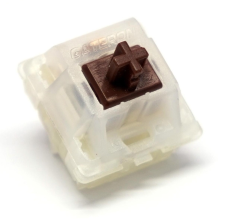

Gateron Red er tasten som oftest blir brukt for dataspill og er en klone av Cherry MX Red. Den er lett å klikke, med en aktiveringskraft på 45 centiNewton, og en lineær trykk-følelse der innmaten til bryteren beveger seg lineært nedover for at kontaktpunktene skal berøre hverandre.
Gateron Blue er tasten som oftest blir brukt for skriving og er en klone av Cherry MX Blue. Den er tyngre å klikke en den røde, med en aktiveringskraft på 50 centiNewton, men bruker en litt annen metode for at kontaktpunktene skal treffe hverandre. Gateron Blue har en innmat som består av to deler, der blokaden blir dyttet av balansepinnen og spretter ned for å aktivere tastetrykket.

Gateron Brown er tasten som oftest blir brukt for skriving og er en klone av Cherry MX Brown. Den er like tung å klikke på som rød, med en aktiveringskraft på 45 centiNewton, men fungerer litt annerledes, selv om metoden for at kontaktpunktene skal treffe hverandre er lik. Den har en ulineær "bump" i innmaten som skiller aktiveringspunktene, som skal simulere følelsen av en blå tast, men fortsatt fungere som en rød med èn bevegende del i innmaten.